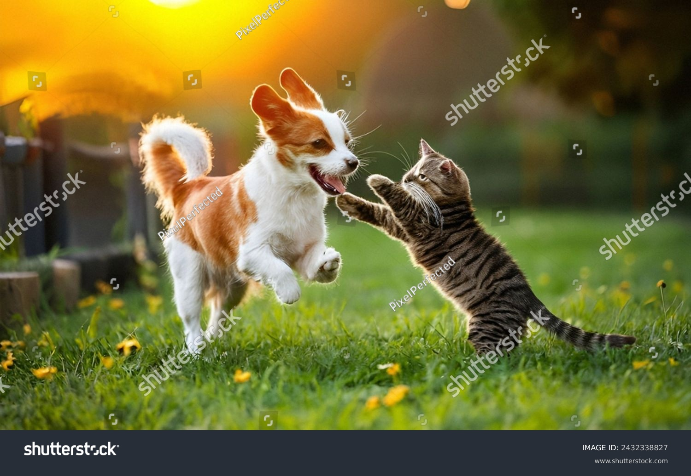

Khulna Government Model School and College (KGMSC) is a renowned government educational institution in Khulna, Bangladesh, dedicated to providing quality, inclusive, and value-based education. Since its establishment, KGMSC has been playing a vital role in shaping young minds through disciplined learning, academic excellence, and moral guidance.
As a trusted name in education, khulna government model school and college serves students from school level to college level, ensuring a smooth academic journey under one institution. We are committed to creating an environment where students can learn, grow, and achieve their full potential.
KGMSC stands for integrity, discipline, and academic strength. Being a government institution, we strictly follow the national curriculum approved by the Ministry of Education while also focusing on modern teaching methods and student-centered learning.
What makes khulna government model school and college unique is its balanced approach to education—where academic performance, moral values, and co-curricular activities receive equal importance.
Khulna Government Model School and College was established to meet the growing demand for quality government education in Khulna city. From the beginning, the institution aimed to provide affordable, high-standard education for students from different backgrounds.
Over the years, KGMSC has grown in reputation due to:
1.Consistent academic results
2.Strong discipline system
3.Dedicated teaching staff
4.Active student participation in national programs
Today, kgmsc is recognized as a reliable and respected educational institution in Khulna.
At KGMSC, we believe that education is not limited to academic success only. True education helps students become good human beings, responsible citizens, and confident leaders.
Our philosophy is based on:
1.Learning with understanding, not memorization
2.Building moral and ethical values
3.Encouraging curiosity and creativity
4.Developing leadership and teamwork skills
Khulna government model school and college focuses on holistic development to prepare students for real-life challenges.
KGMSC offers structured education at both school and college levels under one campus. Our academic system is designed to ensure continuity, stability, and academic excellence.
Academic Levels Include:
1.School section
2.College section
Each level is guided by experienced teachers who ensure that students receive proper academic support and guidance throughout their journey at khulna government model school and college.
Teachers are the backbone of KGMSC. Our institution is proud to have a team of qualified, experienced, and government-appointed teachers who are deeply committed to student success.
Teachers at kgmsc:
Use modern teaching techniques
1.Maintain a student-friendly approach
2.Provide individual academic support
3.Act as mentors and role models
Their dedication ensures high academic standards and positive learning experiences.
Discipline is one of the strongest pillars of Khulna Government Model School and College. We maintain a disciplined yet caring environment where students feel safe, respected, and motivated.
Our discipline system promotes:
1.Respect for teachers and peers
2.Punctuality and responsibility
3.Honesty and integrity
4.Proper dress code and behavior
At KGMSC, moral education is integrated into daily school life.
Khulna government model school and college provides a clean, organized, and learning-friendly campus to support academic growth.
Our facilities include:
1.Well-maintained classrooms
2.Science laboratories
3.Computer labs
4.Library with academic resources
5.Open spaces for activities
These facilities help students gain both theoretical knowledge and practical experience.
At KGMSC, we strongly believe that co-curricular activities are essential for student development. Along with academic education, students are encouraged to participate in various clubs and national programs.
These activities help students:
1.Build confidence
2.Improve communication skills
3.Learn teamwork and leadership
4.Discover their talents
Khulna government model school and college supports all-round development.
Students are at the heart of everything we do at KGMSC. Our teaching approach focuses on understanding individual student needs and helping them grow academically and personally.
We ensure:
1.Equal learning opportunities
2.Encouragement for creativity and questions
3.Emotional and academic support
4.Safe and respectful learning environment
This approach makes kgmsc a trusted choice for parents and students.
Khulna Government Model School and College values strong cooperation with parents and the local community. We believe that student success improves when parents and teachers work together.
We maintain:
1.Regular parent-teacher meetings
2.Academic progress communication
3.Transparent administration
This partnership strengthens the overall education system at KGMSC.
As a government institution, khulna government model school and college strictly follows:
1.National curriculum
2.Government education policies
3.Fair examination systems
4.Transparent academic practices
We ensure accountability and quality in every aspect of education.
KGMSC is committed to contributing to national development by producing educated, ethical, and responsible citizens.
We prepare students to:
1.Succeed in higher education
2.Serve society responsibly
3.Respect national values
4.Face global challenges confidently
Khulna Government Model School and College plays an important role in shaping the future generation.
Parents and students trust KGMSC because of:
1.Government recognition
2.Strong academic results
3.Disciplined environment
4.Experienced teachers
5.Affordable quality education
Khulna government model school and college continues to be a symbol of reliability and excellence in Khulna.
Khulna Government Model School and College (KGMSC) is more than an educational institution—it is a place of learning, discipline, and growth. With a strong academic foundation, moral education, and student-focused approach, KGMSC remains dedicated to shaping bright futures.
If you are searching for a trusted government institution in Khulna, kgmsc stands as the right choice for quality education and character development.